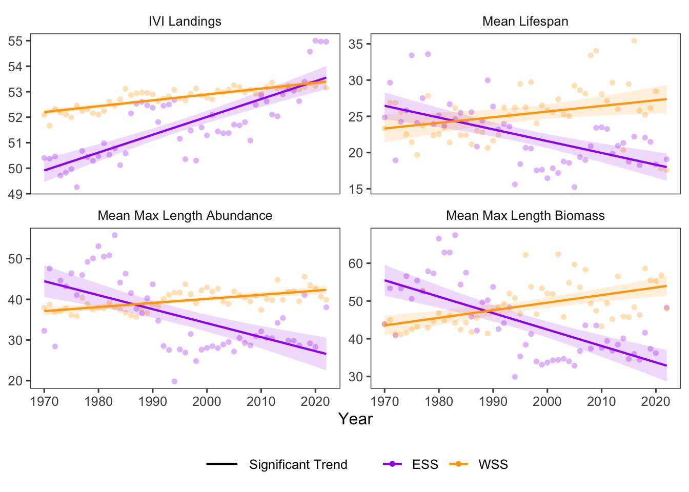

16 Ecosystem Resistance
Data Type: Tabular Data (within eco_indicators)
Spatial Scope: Maritimes
Duration 1970-2022
Source: Bundy et al. 2017
16.1 Introduction to Indicator
The eco_indicators dataset provides indicators to describe the resistance of the marine ecosystem, or its ability to withstand disturbances, whether Anthropogenic or natural (Bundy, Gomez, and Cook 2017).
- Mean Lifespan: Mean of the maximum longevity of each species observed in a survey.
- Mean Maximum Length (Abundance): Mean maximum length of fish species in a survey, weighted by abundance.
-
Mean Maximum Length (Biomass): Mean maximum length of fish species in a survey, weighted by biomass.
- Intrinsic Vulnerability Index (IVI) of Landings: Intrinsic Vulnerability is a measure of a species’ vulnerability to fishing, driven by life history traits. IVI of landings is the total intrinsic vulnerability of species in a catch.
The first three of these indicators are measures of the “potential” of fish species to resist perturbation. Species that are longer-lived and larger can be more resistant to change, and are the same species that are generally targeted by fishing activities. These proxies can indicate the changes to the resistance potential of the community as a result of fishing activities.
Intrinsic Vulnerability Index of the catch captures the total vulnerability of harvested species. Species that are longer-lived, larger, and have longer time to maturity are generally more vulnerable to fishing pressure, so IVIcatch values descript the proportion of these types of fish being harvested. Increases in IVI of landings could indicate increased fishing effort on these species, but decreases could be the result of overexploitation of these species and their concurrent proportional decrease within landings. However, since IVI of landings is calculated from fishery-dependent data, its value is expected to increase with fishing pressure (Bundy, Gomez, and Cook 2017).
16.2 View Data
library(tidyr)
library(plotly)
library(stringr)
plotly_df <- data@data %>% inner_join(global_cols3)
# function to create plot with dropdown menu ------------------------------
make_resistance_dropdown_plot <- function(df,
year_col = "year",
region_col = "region",
value_suffix = "_value") {
# convert to long format
long <- df %>%
janitor::clean_names() %>%
pivot_longer(
cols = ends_with(value_suffix),
names_to = "metric",
values_to = "value"
) %>%
# remove suffix
mutate(
metric = str_remove(metric, "_value")
) %>%
# drop NAs (some regions don't have data for some variables or years)
tidyr::drop_na(value)
# find all metrics and regions
metrics <- unique(long$metric)
regions <- unique(long[[region_col]])
# assign regions to consistent colors
# region_colors <- setNames(hcl.colors(length(regions), palette = "Dark 3"), regions)
# clean names for dropdown panels, helper
pretty_label <- function(x) str_to_title(gsub("_", " ", x)) %>% str_replace("Ivi","IVI") %>% str_replace("Mm","Mean Max")
# build plot -----------------
p <- plot_ly()
# Add bar traces: metric1 has region1..K, metric2 has region1..K, ...
for (metric_i in seq_along(metrics)) {
m <- metrics[metric_i]
for (region_i in regions) {
dat <- long %>%
filter(metric == m, .data[[region_col]] == region_i) %>%
group_by(.data[[year_col]],color, linetype, linewidth, region_group, region_group_label) %>% # in case you have multiple rows per year
summarise(value = sum(value), .groups = "drop") %>%
arrange(.data[[year_col]])
group_name <- unique(dat$region_group)
color <- unique(dat$color)
linetype <- unique(dat$linetype)
width <- unique(dat$linewidth)
# If a region truly has no data for that metric, add an empty trace
# (keeps trace indexing stable)
if (nrow(dat) == 0) {
dat <- tibble::tibble(!!year_col := integer(0), value = numeric(0))
}
p <- p %>% add_lines(
data = dat,
x = ~.data[[year_col]],
y = ~value,
name = as.character(region_i),
legendgroup = group_name,
legendgrouptitle = list(
text =
ifelse(region_i == "4VN" & group_name == "ESS",
"Eastern Scotian Shelf Zones",
ifelse(region_i == "4X",
"Western Scotian Shelf Zones",
NA))),
showlegend = (metric_i == 1),
visible = (metric_i == 1),
line = list(color = color, dash = linetype),
hovertemplate = paste0("<b>", region_i,":</b> ","%{y:.3f}<extra></extra>") )
}
}
n_regions <- length(regions)
n_traces <- length(metrics) * n_regions
buttons <- lapply(seq_along(metrics), function(metric_i) {
vis <- rep(FALSE, n_traces)
shl <- rep(FALSE, n_traces)
idx_start <- (metric_i - 1) * n_regions + 1
idx_end <- metric_i * n_regions
vis[idx_start:idx_end] <- TRUE
shl[idx_start:idx_end] <- TRUE
list(
method = "update",
args = list(
list(visible = vis, showlegend = shl),
list(
title = pretty_label(metrics[metric_i]),
yaxis = list(title = pretty_label(metrics[metric_i]))
)
),
label = pretty_label(metrics[metric_i])
)
})
p %>%
layout(
barmode = "stack",
hovermode = "x unified",
title = pretty_label(metrics[1]),
xaxis = list(title = str_to_title(year_col)), # keep one bar per year
yaxis = list(title = pretty_label(metrics[1]), fixedrange = TRUE),
legend = list(
title = list(text = str_to_title(region_col)),
x = 1.02, xanchor = "left",
y = 1, yanchor = "top",
groupclick = "toggleitem"
),
updatemenus = list(list(
type = "dropdown",
x = -.1, xanchor = "left",
y = 1.15, yanchor = "top",
buttons = buttons
)),
margin = list(r = 180, t = 80)
)
}
# usage:
p <- make_resistance_dropdown_plot(plotly_df)
p <- p %>% config(displayModeBar= F)
pFigure 16.1: eco-resistance Structure Indicators in all NAFO regions and Scotian Shelf regions overall. Use dropdown menu to select indicator, and click legend to isolate regions.
16.3 Trends
Ecological Resistance variables have changed through time in the Eastern and Western Scotian Shelf regions over the sampling span, with greater variation in ESS regions (Fig. 16.1).
Assessing trends over time reveals generally opposing patterns between the Eastern and Western Scotian Shelf, with the Eastern Scotian Shelf decreasing in resistance and the Western Scotian Shelf increasing in resistance over time (Fig. 16.2). Both regions experienced significant increases in IVI of Landings over time, but ESS significantly decreased while WSS significantly increased in all other variables (Fig. 16.2).

Figure 16.2: Top of the Food Web trends for ESS and WSS
16.3.1 Summary Table by NAFO Region and eco-resistance Variable
Trends of each Ecological Resistance variable for each NAFO region within the Eastern and Western Scotian Shelf (1970-2022) are shown below (Table 16.1).
| variable | Eastern Scotian Shelf Trends | Western Scotian Shelf Trends |
|---|---|---|
| Ivi Landings Value |
4VN: 1.48e-01 ∗ 4VS: 2.35e-01 ∗ 4W: 4.03e-02 ∗ |
4X: 2.30e-02 ∗ |
| Mean Lifespan Value |
4VN: -1.32e-02 4VS: -2.15e-01 ∗ 4W: -1.47e-01 ∗ |
4X: 7.78e-02 ∗ |
| Mm Length Abundance Value |
4VN: -3.63e-01 ∗ 4VS: -4.24e-01 ∗ 4W: -3.02e-01 ∗ |
4X: 1.01e-01 ∗ |
| Mm Length Biomass Value |
4VN: -3.67e-01 ∗ 4VS: -5.77e-01 ∗ 4W: -4.12e-01 ∗ |
4X: 2.01e-01 ∗ |
16.4 Relevance to Research and Stock Assessments
Resistance variables offer proximal indicators of a community’s ability to withstand change, and have long-term implications for fisheries and ecosystems.
While negative changes in mean lifespan and mean max length could be the result of fishing pressure targeting larger, long-lived species, positive changes in these variables might also reflect effective fisheries management through time.
16.5 Variable Definitions
| variable | description | unit |
|---|---|---|
| year | Year of trawl survey | |
| region | Region over which values are summarized | |
| MeanLifespan_value | Mean estimated lifespan of species in a survey | years |
| MMLength_BIOMASS_value | Mean maximum length of species in a survey (weighted by biomass) | cm |
| MMLength_ABUNDANCE_value | Mean maximum length of species in a survey (weighted by abundance) | cm |
| IVILandings_value | Mean intrinsic vulnerability index of species in a survey |